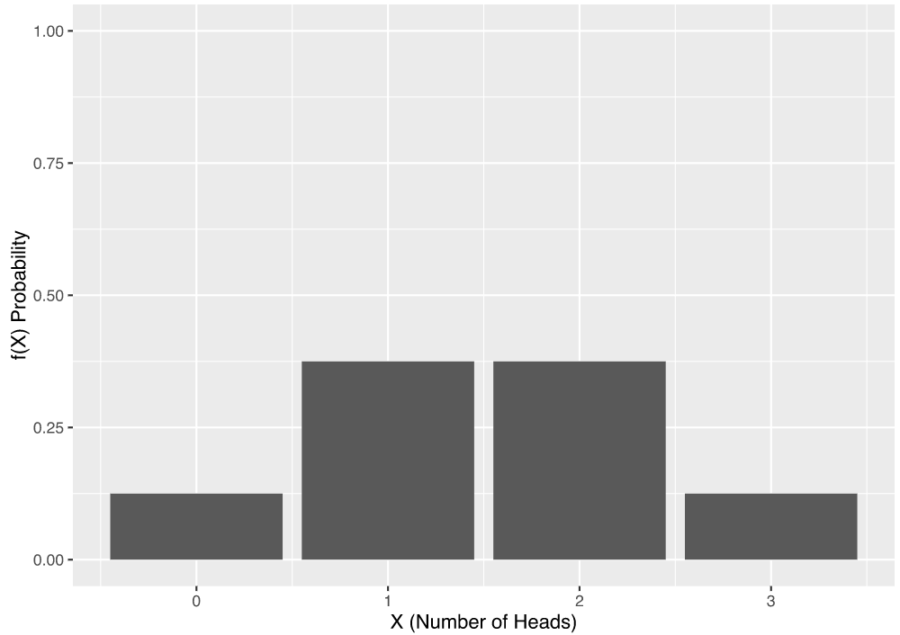
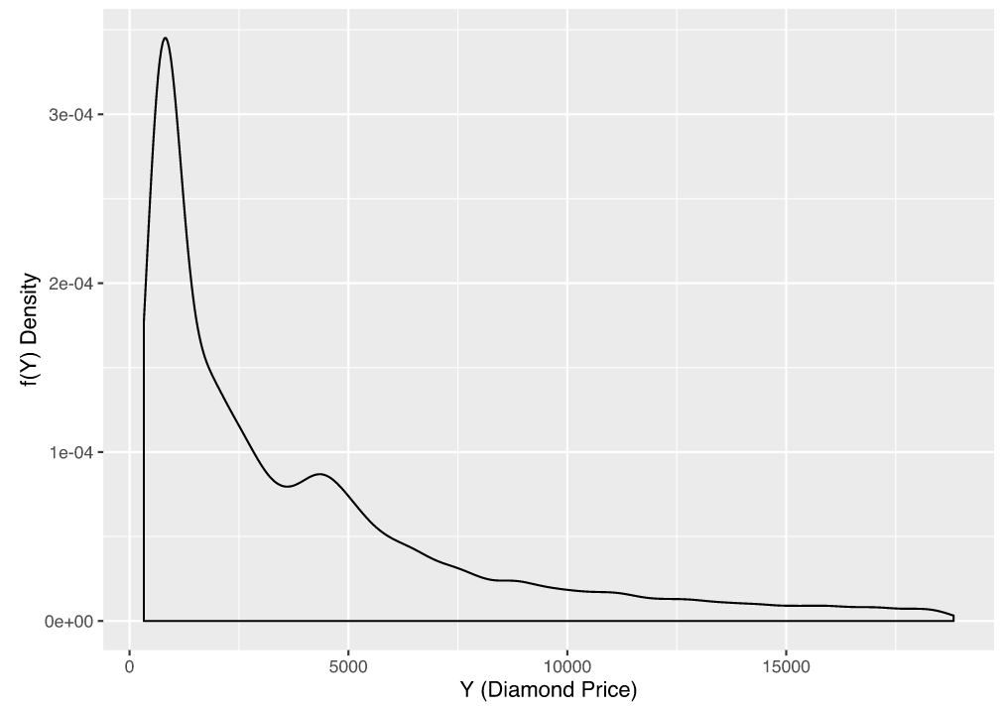

Topic 1.3: Intensity-based registration¶
This notebook combines theory with exercises to support the understanding of intensity-based registration in medical image analysis. Implement all functions in the code folder of your cloned repository, and test it in this notebook after implementation by importing your functions to this notebook. Use available markdown sections to fill in your answers to questions as you proceed through the notebook.
Contents:
Intensity-based similarity metrics (exercises) 4.1 Numerical differentiation 4.2 Similarity as a function of image transformation 4.3 Similarity as a function of rotation

Besides points and surface features, image intensity is an alternative registration basis. It is even the most widely used registration basis. In general, the term intensity refers to scalar values of image pixels or voxels, which are used to calculate transformations between two images.
1. Intensity-based similarity metrics (theory)¶
Compared with point-based registration, intensity-based registration requires less user interaction as it works by iterative optimization of an intensity-based similarity measure (sum of square differences, cross-correlation, mutual information, joint entropy, ratio-image uniformity or partitioned uniformity). Due to the prevalence of 3D volumes in medical imaging, the term voxel similarity measures is typically used to jointly address these methods. In practice, algorithms perform registration between two images based on a voxel subset, which is either randomly chosen or defined by a grid. In other applications, segmentation algorithms aid registration by preselecting a subset of voxels comprising specific regions of interest. At last, similarity measures may be applied on e.g. image gradients instead of voxel values themselves.
Intensity-based registration methods are relatively easy to automate and require few manual steps. However, their application is restricted to a limited range of images given the need for image preprocessing. Algorithms exploiting intensity-based image registration can be used for various purposes: registration of images with different dimensionality; intermodal and intramodal registration; and registration involving complex transforms, to name some.
Sum of square differences¶
Let \(I\) and \(J\) be two images and \(i\) the pixel locations. A simple and intuitive intensity-based measure of the similarity of \(I\) and \(J\) is the sum of squared differences (SSD). The SSD will be equal to zero provided that both images are correctly aligned, and will grow with increasing registration error (misalignement). If \(I\) is the fixed image in a registration problem, and \(J\) is the moving image transformed with a transformation \(T\), the similarity measure will be a function of the transformation. It can be shown that this measure is optimal when two images differ only by Gaussian noise. This is an implicit assumption of this measure, which does not hold for inter-modality registration, and is rarely true for intra-modality registration (e.g. MRI noise is non-Gaussian due to artifacts, which leads to changes between acquisitions, etc.). Nevertheless, SSD can still be successfully used in intra-modality registration. A possible drawback of this similarity measure is that it can be sensitive to “outlier” intensity differences. An SSD algorithm can be denoted as finding the transformation T to minimize for images \(I\) and \(J\):
\(\mathbf{SSD} = \sum_{i}|I(i) - B^\prime(i)|^{2}\,\,\,\,\,\,\, \forall\,i \in A \cap B^\prime\)
Cross-correlation¶
Another measure making slightly less assumptions is called (normalized) cross-correlation (CC). Normalized CC assumes there is a linear relationship between pixel intensities in two images, which frequently is the case for registration of images acquired with the same modality. For images \(A\) and \(B\) with voxels \(i\), we try to find the transformation \(T\) to maximize the equation:
\(\mathrm{CC} = \frac{\sum_{i}(A(i) - \bar{A})(B^\prime(i)-\bar{B}^\prime)}{\big\{\sum_{i}(A(i) - \bar{A})^{2}\sum_{i}(B^\prime(i)-\bar{B}^\prime)^{2}\big\}^{\frac{1}{2}}}\) , where \(\bar{A}\) and \(\bar{B}^\prime\) are the mean voxel values in image \(A\) and the transformed image \(B\), respectively.
Mutual information¶
Compared to the above measures, mutual information (MI) makes very few a priori assumptions about registered objects, which is why it can be applied to larger dimensional registration and many other imaging situations.
Intuitively, MI tries to find out, how much information we have about the pixel intensity at the same location in image \(J\) provided that we know the pixel intensity value at some location in the fixed image \(J\). MI is therefore essentially a reduction in the uncertainty of \(Y\) due to the knowledge of \(I\). Given the joint PMF of two images and the two marginal PMF’s, the mutual information between the two images can be computed with the following formula:
\(\mathrm{MI(I,J)} = \sum_{i=1}^n\sum_{j=1}^n p_{I,J}(i,j)\log\frac{p_{I,J}(i,j)}{p_{I}(i)p_{J}(j)}\)
The unit of MI depends on the particular log function: when using the natural logarithm, the unit is nats, when using base 2 logarithm, the unit is bits. In its essence, MI is a measure of the “compactness” of the joint PMF of two images. When the two images are well registered, the joint PMF is compact. When the two images are not well aligned the joint PMF is “spread out”.
When one of the images is being transformed, the similarity measures are a function of the image transformation. This is “step 1” in our general approach to registering two images. “Step 2” is finding the parameters that find the transformation that maximizes the similarity between two images.
2. Probability theory¶
Random variables¶
Random variables map the outcomes of random phenomena to numbers. Remember the example with coin tossing in the lecture? There, we had a random variable \(X\) (outcome of the coin toss), and another random variable \(Y\) (the number of heads in a series of 3 tosses). To represent possible values and the respective probabilities of the magnitude of a random variable, we use probability distribution functions. In a similar way, we can define medical image intensities as random variables.
Probability mass function (a.k.a probability distribution table)¶
Random phenomenon: Pick a random pixel location. In this case, the pixel intensity can be treated as a random variable. Each outcome from the random phenomenon we are studying can be associated with a probability. If a random variable \(X\) can have a finite set of possible values, we can define a function that maps each possible value to a probability. This function is called probability mass function (PMF), and expresses a discrete probability distribution.
Probability mass function:
\(p_{X}(x) = P(X = x)\)

Figure from “Fong Chun Chan’s Blog”.
What if we have two random variables? For example, the pixel intensity in two images. In such case, we can define a joint probability mass function:
\(p_{X,Y}(x,y) = P(X = x, Y = y)\)
PMF can be used to determine the probability of an observation being exactly equal to a discrete target value. But how can we define the probability mass function for the image intensities? We can use image histogram for this purpose by counting the number of occurrences of each intensity value in the image. In order to treat the counts of the histogram as probability values, we must normalize the histogram in such a way that all values sum to 1. This is the probability mass function for the pixel intensity as a random variable.
Probability density function¶
Probability mass function is defined for discrete random variables. In case of continuous random variables, however, their probabilities are not directly measurable, and we therefore calculate the probability as the proportion of times. Imagine you had a random variable that measured the price of a diamond. Now, what is the probability that a single diamond’s price is exactly equal to e.g. 150 USD? The probability of getting a diamond for that exact price would be very low, if any at all. Therefore, a given value of a variable on a continuous scale cannot be assigned a probability. We therefore need to think in terms of intervals instead of individual outcomes. For continuous random variables, which can take infinite number of possible values, we can define the probability density function (PDF), where the probability of \(y \in [a,b]\) is equivalent to the integral of the PDF between \(a\) and \(b\):
\(P(a \leq y \leq b) = \int_{a}^{b}\,f(Y)\,dy\)

Figure from “Fong Chun Chan’s Blog”.
Bayes’ rule¶
Bayes’ rule is a very useful formula that we will use later in the computer-aided diagnosis notebooks of this course. The so-called Bayes’ theorem gives the probability of an event based on new information that is, or may be related, to that event. Mathematically, the Bayes’ theorem can be expressed as follow:
\(p_{X|Y} = \frac{p_{Y|X}(x|y)p_{Y}(y)}{p_{X}(x)}\) ,
where \(X\) and \(Y\) are events and \(P(Y) \neq 0\), and: - \(p_{X|Y}\) is the probability of event \(X\) occurring given event \(Y\) is true; also known as the posterior probability of \(X\) given \(Y\) - \(p_{Y|X}(x|y)\) is the likelihood of \(X\) given a fixed \(Y\) - \(p_{X}(x)\) and \(p_{Y}(y)\) are the probabilities of observing the two events without any given conditions; also known as marginal or prior probabilities - \(X\) and \(Y\) are events (must not be the same)
Bayes’ theorem is typically utilized in diagnostic decision-making, e.g. to find out if there is a certain clinical manifestation in a patient before images are acquired. Given the prevalence of a disease, a radiologist is able to first estimate the marginal probability of the disease and afterwards assess medical images based on this prior. The Bayes’ rule enables to derive positive predictive and negative predictive values in radiologists’ pre-assessment tasks. Furthermore, this probability theorem also has its utility in cases with similar imaging findings in different diagnoses to calculate the probability at which certain imaging characteristics pertain to rare or common diagnoses (regardless of complete clinical contexts). The Bayes’ theorem is also used in algorithms for medical image artefact corrections, such as in MRI and perfusion-weighted images to reduce noise. Bayesian inference has a wide range of applications in AI-driven radiology software.
3. Optimization for intensity-based registration:¶
General procedure for maximizing similarity functions is:
Start with some initial values for the parameters (e.g. transformation \(T\)).
Slightly update the parameters in such a way that the similarity will slightly increase.
Repeat until the similarity stops increasing.
Gradient ascent / descent:¶
To optimize similarity functions in intensity-based registration, we typically use gradient ascent (to localize function maximum) or gradient descent (to localize function minimum). In other words, these numerical methods help us find the minimum of the error or the maximum of the similarity in registration. To find the minimum and maximum of a function, we can compute the derivative and set it to zero (in case of more variables, set all partial derivatives to zero).
Gradient ascent algorithm for maximizing a function \(f(\mathbf{w})\):
Choose some initial values of the parameters \(\mathbf{w}\)
Calculate the value for the gradient of \(f(\mathbf{w})\) for the current parameters
Update the parameters in the direction of the gradient: \(\mathbf{w} \leftarrow \mathbf{w} \color{red} + \mu\nabla_{\mathbf{w}}f(\mathbf{w})\)
If we want to minimize the function we move in the direction opposite of the gradient (gradient descent): \(\mathbf{w} \leftarrow \mathbf{w} \color{red} - \mu\nabla_{\mathbf{w}}f(\mathbf{w})\)
The parameter \(\mu\) is called learning rate. It controls how fast we move towards the maximum (minimum). If \(\mu\) is too small, the maximum (or minimum) might not be reached in reasonable time. If \(\mu\) is too large, the maximum (minimum) might be missed. Initialization is important. Different starting points will result in different found maxima (and not always global).
[1]:
%load_ext autoreload
%autoreload 2
4. Intensity-based image registration (exercises)¶
### 4.1 Numerical differentiation Numerical differentiation refers to finding the value of a derivative of a given function at a given point without the need to analytically differentiate the function. This technique can be very useful, for example, when the analytical expression for the derivative is too complex and computationally expensive to evaluate. In such a case it might be significantly faster to approximate the derivative instead of computing its exact value.
A simple expression that approximates the derivative of a function \(f(x)\) is:
\begin{equation} \frac{d}{d x} f(x) \approx \frac{f(x+h)-f(x)}{h} \end{equation}
where \(h\) is some very small positive number. When \(h\) approaches zero this expression becomes the true value of the derivative:
\begin{equation} \frac{d}{d x} f(x)=\lim _{h \rightarrow 0} \frac{f(x+h)-f(x)}{h} \end{equation}
A better approximation of the derivative is the symmetric difference quotient given by the following expression:
\begin{equation} \frac{d}{d x} f(x) \approx \frac{f\left(x+\frac{h}{2}\right)-f\left(x-\frac{h}{2}\right)}{h} \end{equation}
Numerical differentiation can also be used to approximate the partial derivatives of a function with more than one variable, for example:
\begin{equation} \frac{\partial}{\partial x} f(x, y) \approx \frac{f\left(x+\frac{h}{2}, y\right)-f\left(x-\frac{h}{2}, y\right)}{h} \end{equation}
\begin{equation} \frac{\partial}{\partial y} f(x, y) \approx \frac{f\left(x, y+\frac{h}{2}\right)-f\left(x, y-\frac{h}{2}\right)}{h} \end{equation}
and in turn the gradient:
\begin{equation} \ f(x, y)=\left[ \begin{array}{c}{\frac{\partial}{\partial x} f(x, y)} \\ {\frac{\partial}{\partial y} f(x, y)}\end{array}\right] \approx\left[\frac{\frac{f\left(x+\frac{h}{2}, y\right)-f\left(x-\frac{h}{2}, y\right)}{h}}{\frac{f\left(x, y+\frac{h}{2}\right)-f\left(x, y-\frac{h}{2}\right)}{h}}\right] \end{equation}

Exercise 4.1.1:¶
In the provided template for the ngradient() function in SECTION 4 of the `registration.py <../code/registration.py>`__ module, implement the computation of the gradient of a function with numerical differentiation using the symmetric difference quotient.
Exercise 4.1.2:¶
Test your implementation of ngradient(). An easy way to test this function is to numerically compute the gradient and then verify with the analytical expression. For example, since \(\frac{d}{d x} e^{x}=e^{x}\) the the numerical derivative \(\frac{d}{d x} e^{x}\) should have approximately the same value as \(e^{x}\). Write your test cases in the provided ngradient_test() script in SECTION 4 of the `registration_tests.py <../code/registration_tests.py>`__ module.
[3]:
%matplotlib inline
import sys
sys.path.append("../code")
from registration_tests import ngradient_test
ngradient_test()
Test successful!

Question 4.1.1:¶
The ndgradient() function can be used to perform optimization with the gradient ascent/descent method. Describe in short how this algorithm works. What is the role of the learning rate parameter in gradient descent/ascent?
Type your answer here
### 4.2 Similarity as a function of image transformation
In the previous section, you have analyzed how the similarity between two images changes as a function of the rotation of one of the images. The goal of this exercise is to write a Python function that, given two images and the parameters of some transformation between them, will output the similarity measure. This function can then be used in combination with ndgradient() from the previous exercise to perform gradient based optimization of the transformation parameters.
The function rigid_corr() in SECTION 4 of the `registration.py <../code/registration.py>`__ module computes the normalized cross-correlation between a fixed and a moving image transformed with rigid transformation. The three parameters of the rigid transformation (rotation angle and 2D translation vector) are passed to the function as a vector \(\mathbf{x}\).
Here is an example of how to use this function to numerically compute the derivative for a set of parameters:
import numpy as np
import matplotlib.pyplot as plt
from registration_utils import ngradient
I = plt.imread('some_fixed_image.tif')
Im = plt.imread('some_moving_image.tif')
# create an instance of rigid_corr for this particular pair of images
rigid_corr_I_Im = lambda x: rigid_corr(I, Im, x)
x = [np.pi/4, 10/100, 20/100]
# computes the numerical gradient at x
g = reg.ndgradient(rigid_corr_I_Im, x)
In this code snippet, we first create an instance of the function rigid_corr() where the first to input parameters (the fixed and moving image) are preset. The new function rigid_corr_I_Im() now has only a single input parameter - the vector \(\mathbf{x}\) that stores the rotation angle and the translation. rigid_corr_I_Im() can be used with ndgradient() to compute the gradient of the similarity function at a particular point (in this example for the point
x = [pi/4, 10/100, 20/100]).
Question 4.2.1:¶
Let’s assume that after executing this code snippet, the computed value for the derivative at point x = [pi/4, 10, 20] is g = [10, -5, 30]. Will increasing the rotation angle (the first parameter of \(\mathbf{x}\)) by a very small amount increase or decrease the similarity between the fixed and transformed moving image? Motivate your answer.
Type your answer here
Exercise 4.2.1:¶
Using rigid_corr() as an example, implement the following two functions in SECTION 4 of the `registration.py <../code/registration.py>`__ module: 1. affine_corr() that computes the normalized cross correlation for a pair of images as a function of affine transformation, and 2. affine_mi() that computes the mutual information between a pair of images as a function of affine transformation.
The only thing that you need to change is the length of the parameter vector, which for affine registration should contain the rotation, scaling, shearing and translation parameters, the computation of the transformation matrix and for affine_mi() the function call that computes the similarity measure.
### 4.3 Similarity as a function of rotation
Let’s put the implementations of correlation and mutual information functions to some use. You are going to compute the similarity between an image and a rotated version of that image for different rotation angles. The registration_metrics_demo() Python function contains code for performing this analysis. Study the function and make sure you understand what it does (you can skip the part about visualization of the results).
Exercise 4.3.1:¶
Run the demo and describe and analyze the results.
[ ]:
%matplotlib inline
import sys
sys.path.append("../code")
from registration_tests import registration_metrics_demo
#registration_metrics_demo()
Question 4.3.1:¶
Run the demo again but this time compute the similarity of the T1w image with a rotated version of the T2w image for different angles (note that the T1w and T2w images in this example are registered). Describe and analyze the results. Would the normalized cross-correlation metric be suitable to register the T1w and T2w images? Which of the two analyzed metrics would be more appropriate? Motivate your answer.
Type your answer here
References¶
[1] Recommended reading: Fitzpatrick, J.M., Hill, D.L. and Maurer Jr, C.R., Image registration. [2] Tonnies, Klaus D. Guide to Medical Image Analysis.